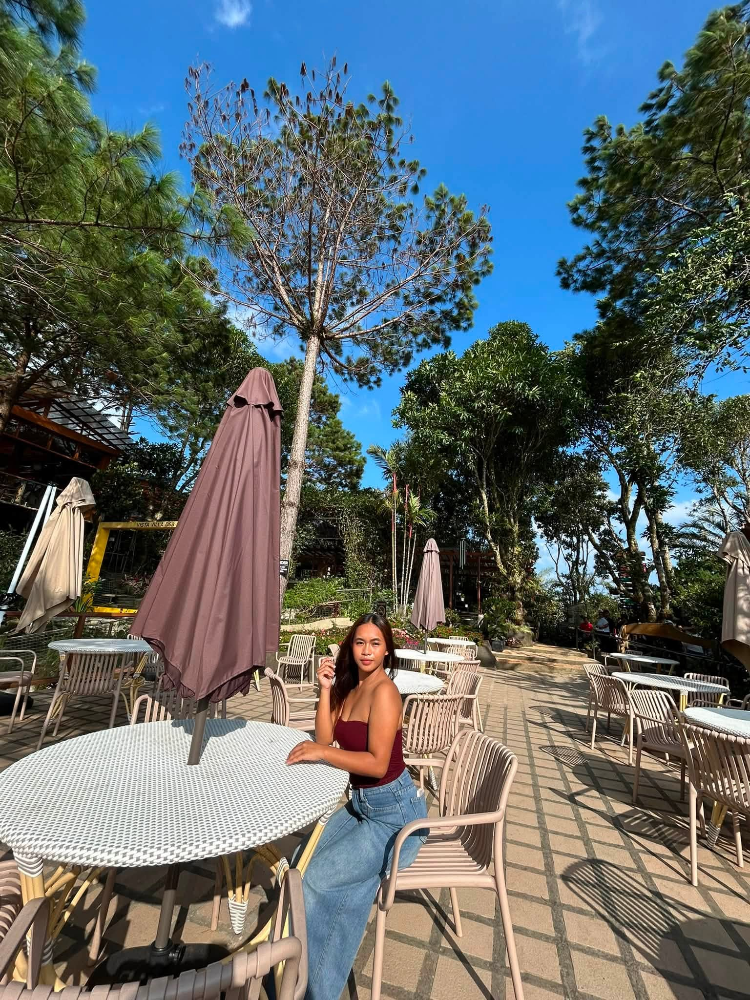

HELLO, I'M
Welcome to my personal portfolio! This website is about who I am, my journey as an IT student, my goals, and the things I enjoy doing.
Know More About Me
GET TO KNOW ME
I'm Leiry Jane Toledano Mojica, 19 years old, from Salvador Benedicto, Negros Occidental. I am currently taking a Bachelor of Science in Information Technology at Central Philippines State University - San Carlos Campus.
I am a simple person who enjoys spending time with the people I love and learning new things.
I am a family-oriented person who loves spending time with my family and friends. I also enjoy eating sweet foods, dancing on TikTok, and going somewhere with my friends.
I value the people around me and enjoy making memories with them.
THINGS I ENJOY
I enjoy playing online games during my free time. It helps me relax and have fun.
I enjoy exploring and buying makeup products online.
I love dancing on TikTok and trying different dance trends.
I love eating sweet foods, especially when I want to treat myself.
I love going somewhere and spending quality time with my friends.
MY COLLEGE EXPERIENCE
My journey as an IT student has not been easy. I found this course hard for me, especially when learning programming and coding.
Sometimes I feel confused when I see codes that I don't understand yet. However, I am willing to learn and improve myself little by little.
I badly want to learn coding because I know that it is an important skill for my future career. Even though it is difficult, I will continue practicing and learning until I become better.
MY DREAMS
My first goal is to finish my college education and successfully complete my Bachelor of Science in Information Technology degree.
I want to become a successful person and build a good career in the future.
One of my biggest dreams is to support my family and give them the life and things they deserve.
"I may not understand everything today, but I will keep learning until I do."
— Leiry JaneLET'S CONNECT
This portfolio represents a little about who I am, my hobbies, my goals, and my journey as an IT student.
Back to Top